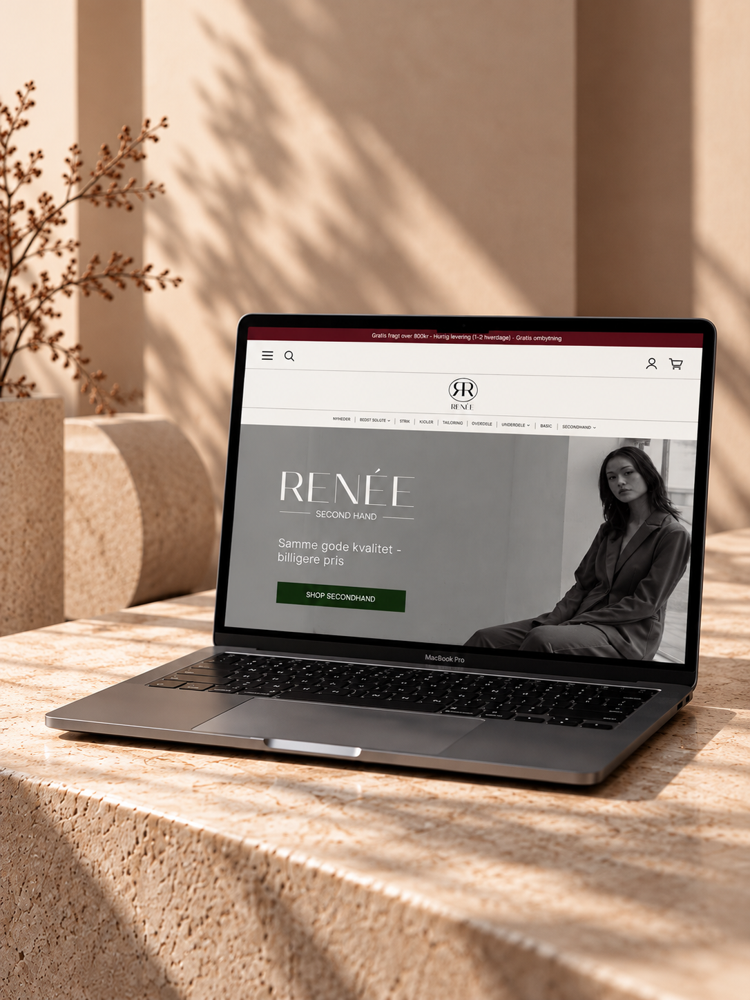
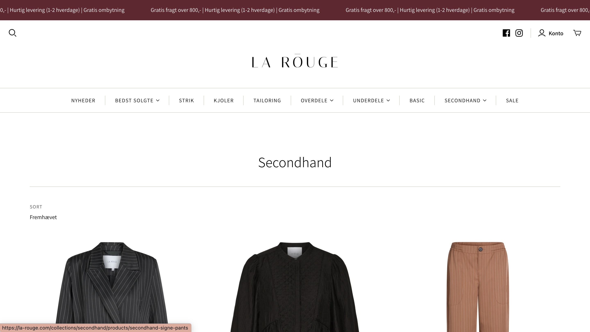
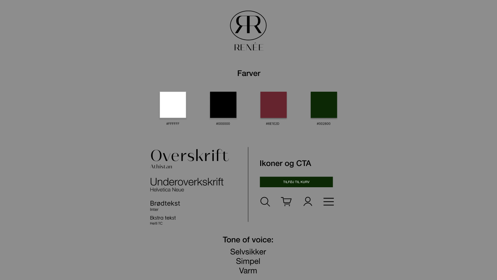
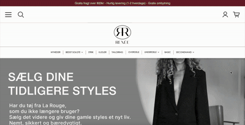
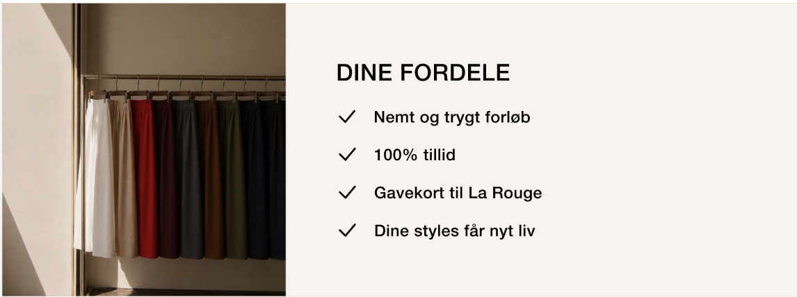

Skab et univers
For at vise det kvalitetsbevidste og luksuriøse ved det her secondhand tøj, skal det have et univers for sig selv, som visuelt kan formidle det.
CASE 03
La Rouge er et kvindetøjsbrand med en målgruppe af kvinder i alderen 47-57 år. I denne case har vi arbejdet på, at udvikle et subbrand til deres secondhand side, så det ikke bare står som en produktkategori hos dem.

Udfordringen i denne case lå i at skabe et secondhand-univers til en målgruppe, som typisk ikke køber secondhand tøj. Vi valgte dog stadig at appellere til deres nuværende målgruppe, da det er dem, der er mest loyale overfor brandet og dermed mere tilbøjelige til at have glæde af denne side. Målet var derfor at få flere eksisterende kunders øjne op for recommerce konceptet og optimere både konverteringen og udbuddet af secondhand tøj hos La Rouge.

La Rouges nuværende secondhand side.
Eftersom subbrandet skulle have La Rouges brand-DNA i sig, startede vi med at undersøge La Rouge som brand. Vi fandt ud af, at de har stort fokus på den gode kvalitet, self-love, kvindepower og autencitet. Næste skridt var at tale med kvinder i målgruppen for at forstå, hvordan vi kunne gøre secondhand mere attraktivt for dem. Her er 3 vigtige fokuspunkter, vi endte med at prioritere i vores arbejde med denne case.
For at vise det kvalitetsbevidste og luksuriøse ved det her secondhand tøj, skal det have et univers for sig selv, som visuelt kan formidle det.
Mange i målgruppen synes det er for manuelt krævende at sælge deres tøj online, så vi vil sætte stort fokus på, hvor nem processen er, når de sælger gennem La Rouge.
Gennem målgruppen fik vi også indsigt i, at de fx oftest køber secondhand, hvis de føler, at de får en ordentlig varer til en rimelig pris.

Først og fremmest har vi skabt et nyt univers for secondhand hos La Rouge, som visuelt adskiller sig fra deres nuværende univers, men stadig ligger meget tæt op ad deres brand-DNA. Vi har bl.a. givet det navnet Renée, som er et fransk kvindenavn med betydningen "født igen". Her trækker vi på det franske og kvindefokuserede fra La Rouge. Vi lavede et logo med et R for Rouge og et R for Renée og satte dem ryg mod ryg som et symbol på fællesskab. De to bogstaver omkranses af en cirkel som symboliserer cirkulariteten af La Rouges tøj. Sidst valgte vi at give subbrandet sin egen grønne accent-farve, som symbol på bæredygtighed og feminisme.

Næste skridt var at optimere salgsprocessen og vise brugeren tydeligt, hvor nemt det er at sælge deres La Rouge tøj gennem Renée. Vi har derfor lavet en salgsside, hvor brugeren med det samme får overblik over den hurtige proces med kun 4 simple trin. De kan også se deres fordele, hvilket skaber en tryghed hos brugeren. Hver gang brugeren går videre i salgsprocessen, er der tydelige forklaringer og guides, som hjælper dem nemt og sikkert gennem hele brugerrejsen. Vi holder det simpelt og tager dem i hånden hele vejen.

Allerede i hero-sektionen på købssiden, har vi lavet et heading med teksten "Samme gode kvalitet - billigere pris." Tanken er at gøre brugerens fordele klare for dem helt fra starten af. Vi ønsker at skabe associationer til "tøj af god kvalitet" og "den gode handel" fremfor bare "genbrugstøj". Som tidligere nævnt, gør vi også brugeren hurtigt opmærksom på deres fordele, når de kommer ind på salgssiden. Brugeren skal altså hele tiden være opmærksom på, hvad de selv får ud af, at bruge denne tjeneste.
Brugeren får nu en oplevelse af at træde ind i et nyt, kvalitetsbevidst univers med positive associationer til La Rouges recommerce koncept.
Salgssiden tager nu brugeren i hånden og guider dem gennem deres brugerrejse fra start til slut.
Hele subbrandet og dets side er nu tilpasset til målgruppen, så de forhåbentlig bedre kan forholde sig til hele konceptet og få en større interesse i La Rouges secondhand tøj.
Denne case har lært mig hele tiden at have målgruppen med i overvejelserne omkring, hvordan et brand og et koncept kan skabe størst værdi for dem. Det har også givet mig større erfaring med hele tiden at sætte mig i målgruppens sted og tænke som dem. Casen har fået mig til at reflektere over, hvordan et subbrand både kan trække på et hovedbrands DNA og samtidig skabe nye meningsfulde visuelle universer. Næste skridt i denne case ville være at kigge nærmere på, hvordan man kan inddrage hovedbrandet mere og gøre det tydeligere at de to brands hænger sammen. Derudover vil man også skulle brugerteste den nye løsning og finde ud af, hvor det skaber størst værdi og hvor der skal tilpasses yderligere.
Jeg har fået ny erfaring med at arbejde med skabe et subbrand og samtidig koble det sammen med hovedbrandet.
Arbejdet med målgruppen har givet mig en forståelse for, hvordan et koncept bedst muligt kan introduceres og tilpasses en bestemt målgruppe.
Jeg har fået større erfaring med vigtigheden af at gøre et godt forarbejde, inden man begynder at designe og finde på nye ideer.